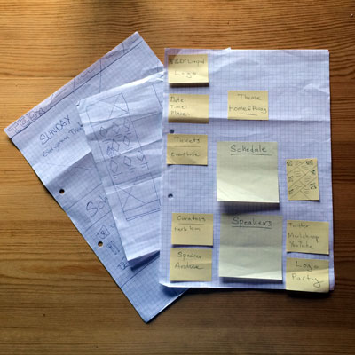
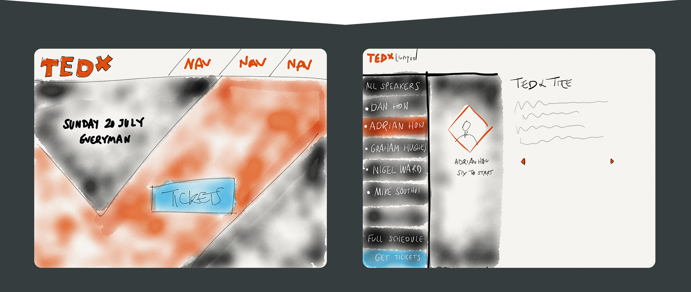
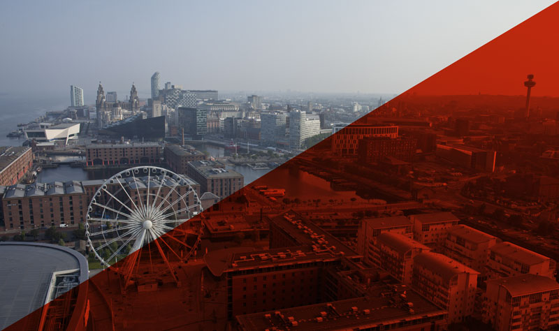
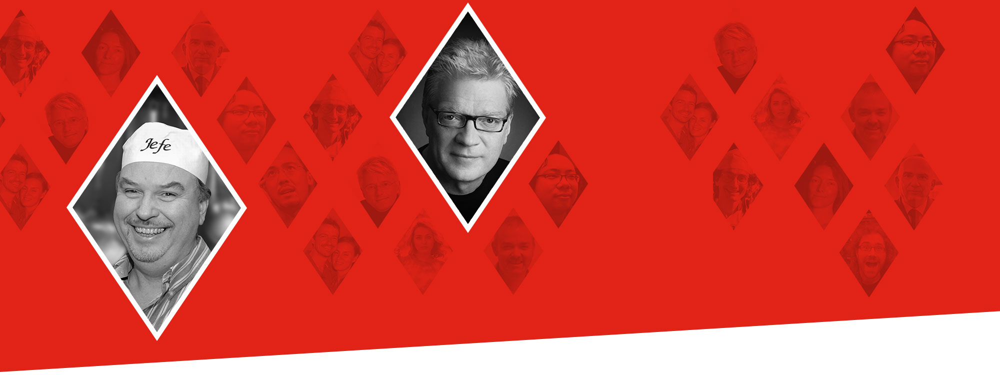
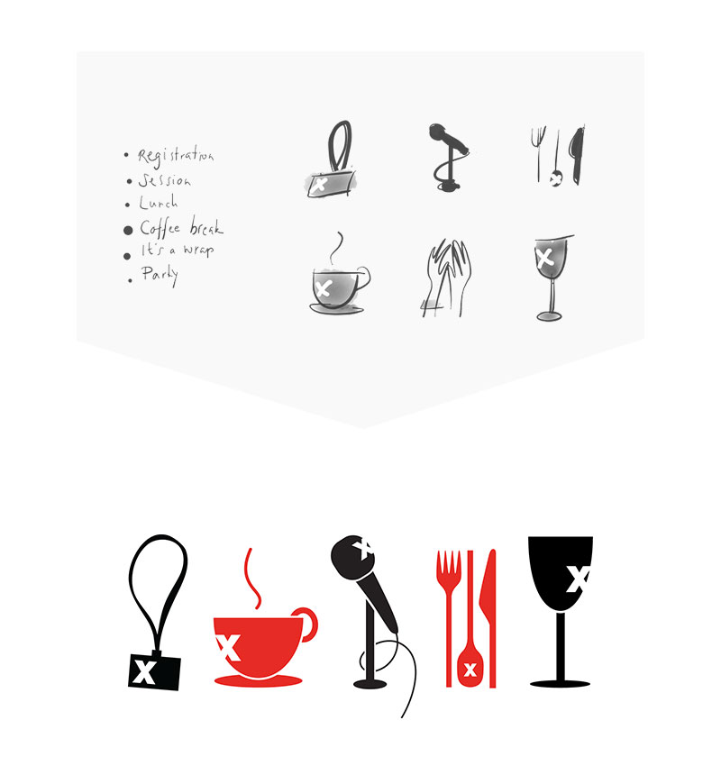

On the back of the success of the Thinking Digital website, I was invited to design the new website for TEDxLiverpool. TEDx events are independently organised, yet there are strict brand guidelines for how to go about using the TED brand resulting in many similar looking websites. Therefore, my aim was to try to interpret these guidelines in a new and innovative way resulting in a TEDx website that really stood out from the crowd.
Content strategy

Notes from an early brainstorm
The previous site contained a lot of irrelevant and out of date content including a stagnant blog, and information about past events written as though they were taking place in the future. It was therefore important for me to develop a content strategy that ensured the site remain timely both before, during and after the event had taken place. In order to achieve this, I scaled the content back focussing only on the key messages of what, where, when, who and how. Now that the conference is over, I'm transforming the site into a timecapsule where previous events can be relieved through videos of the talks, before information about the next event is released.
Layout
To avoid a bloated navigation, I decided to condense all available information onto the homepage from day one. This meant that instead of having to click through to subpages, the user could just scroll down to see concise information answering key messages of what it was all about, who was speaking, and a rough schedule for the day, all accompanied by a constant visible call to action: buy tickets. As the speakers were confirmed, I introduced an 'open' navigation where all speakers were present so that no click through to the individual speaker pages was needed.
Early paper sketches; exploring navigation

Home & Away
The theme for this particular TEDx Liverpool event was Home & Away, which meant that all the speakers and performers had some sort of connection to Liverpool. I felt it was important to highlight that connection with strong imagery of the city. I therefore got in touch with IronBird who are a Liverpool based company specialising in aerial photography. I experimented with many image style ideas, and settled for a striking black and TED red style to make sure text was legible as an overlay.

Aerial shot of Liverpool
Angles and Diamonds
The visual design for the site was influenced heavily by the strong lines in the letter X of the logo. Using this as the basis shape, I created speaker profile images as diamonds to break away from the more traditional square or round mould. However, this meant that sourcing speaker photographs that fitted the diamond shape was difficult as the face needed to be centred.
To uniform the speaker images I made them all black and white, removed noisy backgrounds to soften the look and tweaked all images to have similar exposure settings. The angled edges were used to segment the site. This design theme was also carried through into social profiles and on-the-day material.

CSS challenges
I'm always challenging myself to stay up-to-date with trends and industry standards, particularly in the area of CSS3, responsive design techniques and design patterns.
To make the desired diamond shape, I've used CSS3. I scaled the X axis down to 75%, then rotated the image holder 45 degrees, and then scaled the image itself back up to 100% and rotate back to 0 degrees.
If you'd like to take a closer look at the detail, in particular the use of flexible grids, media queries and vendor prefixes, I've added my work to a CodePen, which got featured on the CodePen homepage.
To prevent the site from becoming too text heavy, I developed a series of icons, to use both on the site, and in other marketing material as well as signs on the day of the conference.
Early icon sketch became finished design

I sketched out many types of icons, but in the end settled for this sophisticated style, that I find blends well with the overarching typography and helps lift the design. I'm particularly pleased with how it makes the schedule page easy to scan through and quickly get the overview.
A great turnout and wonderful reviews of the event means that TEDxLiverpool will return in 2015. I'm currently in the process of gathering content from all the previous years to build an archive of videos. A showcase of talks should hopefully encourage people to buy tickets for future events, before the next line up has been released.
At the back of this work, I've picked up another two TEDx websites: Manchester and Newcastle.